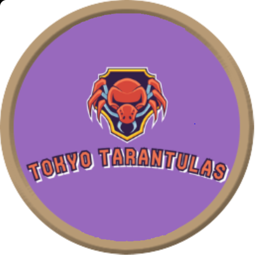

EKIPE
Vito Torej Tokyo Tarantulas

Team owner: Vito Torej
Joined league: 2024 (season 8)
History: //
Arena: Tokyo Dome
Capacity: 50.000
Location: Tokyo, Japan
Average ranking: ///
| Sezona | Uvrstitev |
|---|---|
| 2017/18 | ///// |
| 2018/19 | ///// |
| 2019/20 | ///// |
| 2020/21 | ///// |
| 2021/22 | ///// |
| 2022/23 | ///// |
| 2023/24 | ///// |
| 2024/25 | ... |
| AVERAGE | ///// |
Uvodni intervju - VITO TOREJ (september, 2024)
Najprej seveda dobrodošli in veliko sreče. Upamo, da imate dovolj velike ekrane na telefonu, da boste vidni na lestvici brez scrollanja. Sedaj pa nekaj uvodnih vprašanj, da vas malce bolje spoznamo.
1) Pojasnite na kratko širši javnosti ime in maskoto vaše franšize.
Za Tokyo tarantele sm se odloco ker sm sprva isko malo besedno igrco z mojmo priimko se posebej ker sm rookie in s tem bote lazje vedli s komo trejdate (lejte kk prijazn sm ne me scammat pls)
poleg tega sm pa isko neko kulsko zival ki usaj do neke mere vzbuja strah v mojih nasprotnikih in tarantela se je po obseznih raziskavah in vprasalnikih pokazala za bolj strasno od tukana, tjulnja in pa tapirja.
2) Kakšni so cilji v vaši uvodni sezoni? Imate kakšne fantasy izkušnje iz drugih lig?
Klub višji konkurenci kot v prejšnji fantasy ligi, ki sem jo za zdaj igral, se mi zdi da 3 leta, mislim da se absolutno lahk uspešno uvrstim v playoffe in pol prek trdega dela,
pametnih tradov in z vlko sreče od bogov DTD-jev in O-jev borim za neke solidne enomestne uvrstitve na konco lige.
3) S katerim managerjem v ligi imate že sedaj beef in katerega managerja se najbolj bojite?
Beefa za zdaj se mislim da nimam s kom razn ce se motim pa me kdo secretly hejta… V prihodnosti bomo pa vidli ce se to spremeni ampak mislim da bom ostal dokaj pod radarjem kar se tege tice.
Bojim se ne nobenga ampak bom pa priznal da bom malo bolj previdn glede Jurharja in Cicija, zarad tega ker sta to bla ubistvo človeka s katerima sm se do zdaj največ posvetoval glede fantasyja in vem da zelo aktivno spremljata sceno
(dobo sm tot 700x warningov glede Jurharja, tk da to tot ne pomaga).
4) Kdo je vaš najljubši košarkar v ligi in za katero moštvo navijate?
Kot vsakemo Slovenco mi je najjača ekipa Dallas in valda Doncic, ampak so mi zelo pri srcu tut Nuggetsi z Jokićem.
5) Kakšen bo vaš doprinos ligi?
Moj doprinos upam da bo veliko dobre volje in širjenje radosti v tej izredno tekmovalni skupini.
Zaključna misel
Se veselim zacetka sezone pobi💪🏻.